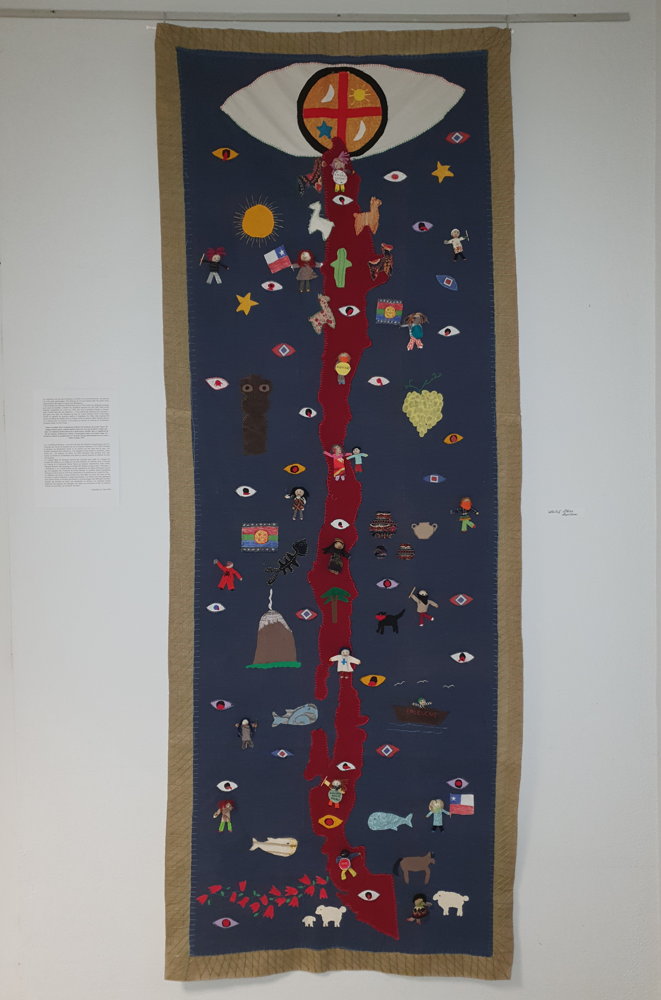
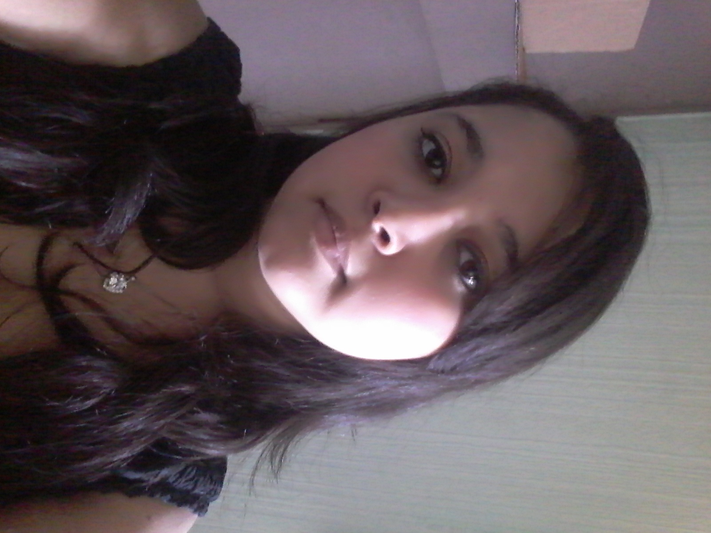

Atrapados por la brutalidad del golpe de estado chileno en 1973. Patricio y Nivia, luchadores de la resistencia MIR, huyeron con sus hijos del país a Francia buscando seguridad. Nivia y su hija decidieron luchar en Francia por la memoria de la mujeres en Chile, por eso, madre e hija complementarias, de generaciones diferentes, decidieron actuar juntas para compartir sus experiencias y emancipar sus historias, por un lado para curar sus penas y las de sus semejantes y por otro lado para vitalizar la historia
SINOPSIS
SINOPSIS & NOTA DE INTENCIÓN
NOTA DE INTENCIÓN
El tema de la memoria se nos impuso y después de esto decidimos trabajar sobre el feminicidio, que es un tema de actualidad que nos interesa. Sin embargo decidimos pasar a otro tema después de haberlo hablado con la Sra. Jeanne Coudurier. Tuvimos que cambiar el tema ya que era casi imposible encontrar testimonios de mujeres víctimas de feminicidio. Por eso decidimos contactar con Nivia, con quien ya habíamos hecho un proyecto juntos y decidimos centrar nuestro proyecto en las mujeres de la resistencia porque nos permitía mantener nuestro deseo de trabajar en el tema de las mujeres.
Para alcanzar nuestro objetivo, hemos contactado primero con la familia Alarcón, que serán nuestros protagonistas. Luego fijamos una primera reunión para hablar de nuestro proyecto y conocer un poco más sobre su historia. Después de eso fijamos otra cita para asistir al taller de Arpilleras. Después participamos en la inauguración de las Arpilleras. Terminamos con una visita al taller de la hija, Antonieta. En cuanto a lo establecido, es decir, las citas, la asistencia a los talleres y la inauguración, se hizo sin problemas, pero lamentablemente debido a la pandemia de coronavirus no se pudo lograr el fin de nuestro proyecto porque hubiéramos querido finalizar el proyecto con una entrevista con la madre y la hija.
Nuestro documental está dedicado a los papeles de las mujeres que participaron en la resistencia Mir en Chile, con especial atención a la familia Alarcón. Sin embargo, veremos a lo largo del documental la evolución de los roles de las mujeres y su compromiso.
Los protagonistas son una familia chilena que huyó del golpe de Pinochet. Nos centramos en la madre, Nivia, y la hija, Antonieta, que crearon talleres para mantener viva la memoria. Nivia es la fundadora del taller de Arpilleras, en él quiso transmitir sus conocimientos en materia de costura para que otros pudieran finalmente expresarse con las Arpilleras. En cuanto a Antonieta, además de apoyar el compromiso de su madre, participa en sus iniciativas. Además, Antonieta, que es una mujer muy comprometida, fundó la asociación “Les droits de l'Homme” y en el taller "Utopía" crea sus propios grafiti.
Asistimos al taller creativo de Arpilleras,en lo cual hemos podido conocer a otras mujeres que tienen una historia personal a transmitir y nos conmovió mucho su dedicación a esta transmisión de memoria y a esa parte de resistencia que está anclada en ellos.
Este taller es un lugar de reagrupación donde toda la familia Alarcón trabaja junta para transmitir una experiencia difícil y evitar una posible repetición en otros países.
Asistimos también a la inauguración de la exposición de las Arpilleras, donde estas mujeres pudieron exponer su trabajo y compartir sus historias. Esta inauguración ha permitido sobre todo mostrar su trabajo de grupo y la denuncia de la represión que se está produciendo actualmente en Chile gracias a una Arpillera común.
Por último, la cita en el taller Utopía, lugar de trabajo y de creación de Antonieta. Nos explicó en qué consiste su trabajo, y lo que denunciaba.
El documental contiene puntos sociales de actualidad basados en la vida de las mujeres que han participado en la resistencia o que tienen una historia afectada por la política. La memoria es uno de los temas principales abordados, ya que las mujeres que participan en ella quieren hacer perdurar la memoria para que todos estén informados de la represión vivida y que ésta no vuelva a repetirse.
Las dificultades se debieron a la falta de tiempo, especialmente para la inauguración porque en ese momento estábamos en clase. Tuvimos dificultades para el rodaje porque no sabíamos realmente cómo filmar, sobre todo porque había mucha gente en la inauguración y no podíamos prever los movimientos de la gente.
Los materiales de los que hemos dispuesto para la filmación y el sonido son: dos teléfonos, uno para el sonido y otro para la imagen.
Para la edición : Filmora.
ARPILLERAS
MEMORIA & RESISTENCIA


HISTORIA DE LAS ARPILLERAS
Las arpilleras son pequeñas pinturas en textiles y en tres dimensiones, que dan vida a pequeños personajes. Historias de vida que encajan en pequeñas telas cuidadosamente cortadas y cosidas con delicadeza. Es la folclorista chilena Violeta Parra quien en 1959, tras un prolongado reposo en cama por enfermedad, realizó las Arpilleras inspiradas en el Arte Ingenuo. Se expondrán en particular en el Louvre en 1964, ella será la primera mujer en exponer sola. Violeta Parra dirá de las Arpilleras: "es como las canciones que pintamos". Poco después de esta fecha, una bordadora llamada Leonor Sobrino llegó a Isla Negra (Chile), y organizó los primeros talleres...
Las "Arpilleras Políticas" nacieron como resultado de los muchos traumas causados por las violaciones de los Derechos Humanos durante la dictadura chilena (1973-1990). Durante la dictadura se produjeron desapariciones forzadas y torturas en todo el país. Las familias buscaban a sus desaparecidos. Las mujeres, madres e hijas buscan a sus seres queridos pero sin éxito. La tristeza y la desesperación son grandes, y no se les da ninguna respuesta o solución.
El cardenal Raúl Silva Henríquez, de Santiago, busca soluciones para ayudar o aliviar la tristeza de los familiares de los detenidos o desaparecidos, y se pone en contacto con la abogada de la Vicaría de la Solidaridad Gloria Torres que propone la intervención de una artista, Valentina Bonnet. Propondrá la creación de pinturas de tela para "Contar", "Externalizar". El primer taller de Arpilleras Políticas fue creado en 1974 bajo el impulso y protección del Comité Pro Paz
Las Arpilleras eran por lo tanto mensajeros, objetos que podían revelar expectativas, amor, violencia, miedos.
CUADERNO DE BITÁCORA


Fase 1: Reflexión y toma de contacto
Fase 2: Entrevista


Fase 3: Taller
Fase 4: Inauguración


Fase 5: Utopia
Fase 6: Crisis sanitaria

Anissa LAJILI
22 ans
LLCER Espagnol
Encargado de : Escenario, Producción, Fotografía, Voz en Off.
Me alegró mucho hacer este proyecto, porque me ayudó a poner mi espíritu creativo en buen uso, porque en el sistema escolar no se nos permite hacerlo.
Fue una experiencia enriquecedora, tanto personal como socialmente, que me hizo descubrir facultades que no conocía de mi personalidad.
... Leer Más
Merve TOSUN
22 ans
LLCER Espagnol
Encargado de : Escenario, Producción, Fotografía, Montaje.
Me encantó vivir esta experiencia, porque fue muy enriquecedora para mí.
Gracias a esta creación documental, pude descubrir una parte del mundo del cine.
Esta experiencia ha sido a la vez estresante, molesta y divertida. Hemos vivido altibajos, pero me quedé con un recuerdo muy bueno.
...Leer Más
Manel MOKHTARI
25 ans
LLCER Espagnol
Encargado de : Escenario, Producción, Subtítulos, Creación del sitio.
Me alegró mucho hacer este proyecto, porque me ha sido muy beneficioso y enriquecedor, me ha permitido tener a un espíritu creativo, vivir el oficio de cineasta y de realizador y descubrir al mismo tiempo las condiciones para realizar un documental.
La realización de un documental, no es algo sencillo y requiere mucho tiempo y paciencia, y a pesar de las dificultades encontradas, a veces inesperadas, poniéndonos a adaptarnos y a encontrar soluciones, sigue siendo una gran experiencia.
...Leer Más¿QUIÉNES SOMOS? :
- Estudios: 3er año de Licenciatura, Literatura y Civilización Extranjera (LLCER).
- Universidad : UFR de Grenoble
- Proyecto: cine documental sobre el tema de la memoria en relación con el mundo hispánico
- Tema: Resistencia de las mujeres a través de las Arpilleras
- Propósito: continuar transmitiendo la memoria de estas mujeres y advertir de lo que está pasando en el mundo.
Ficha Técnica
Título original : Resistencia
Año de producción : 2020
Tipo de película : Película documental
Idiomas : Versión francesa con subtítulos español
Lugar de rodaje : Grenoble
Escenario
Guionista : Lajili Anissa
Guionista : Tosun Merve
Guionista : Mokhtari Manel
Soundtrack
Música : Butterfiles Piano Sonata
Voz en Off : Lajili Anissa
Producción
Productor : AMM Group
Productora : Lajili Anissa
Productora : Tosun Merve
Productora : Mokhtari Manel
Equipo Técnico
Director de fotografía: Tosun Merve et Lajili Anissa
Montadora : Tosun Merve
Subtitulado por : Mokhtari Manel
Material Utilizado: Móvil
Sitio Web : Mokhtari Manel

{kind=link}
{kind=link}